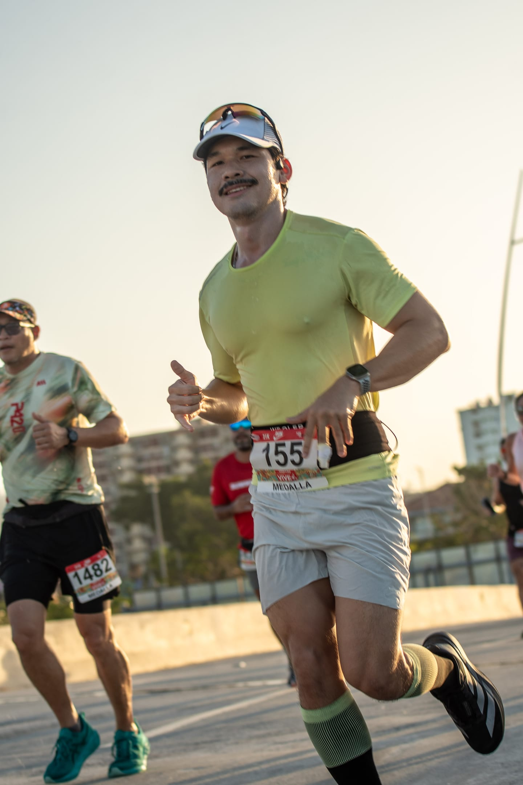
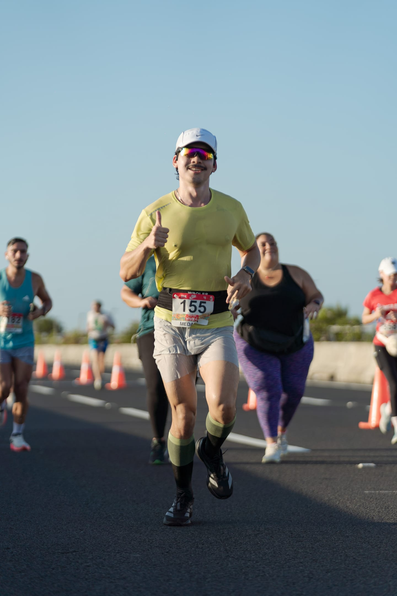

Diez kilómetros de verdad
Mi primera carrera de 10K. Cada kilómetro tiene algo que decirte si estás dispuesto a escuchar con las piernas.
Había gente preparándose para su primer medio maratón. Veintiún kilómetros. Se les veía en la cara — esa mezcla de orgullo anticipado y terror silencioso. Yo estaba entre ellos, pero mi guerra era otra. Diez kilómetros. Mi primera carrera organizada. Mi primera vez midiendo lo que valgo contra un reloj que no negocia.
No vine a participar. Vine a saber si lo que entrené existe fuera de mi cabeza.
Kilómetro 1 — 5:57 / 155 bpm
No salgas a demostrar nada.
La línea de salida es una trampa. Todos salen como si los persiguiera algo. La adrenalina te dice que puedes, el ego te dice que debes, y las piernas quieren obedecer a los dos. Pero yo tenía un plan. Salir lento. Deliberadamente lento. Dejar que el cuerpo entienda que esto no es un sprint de cien metros. Es una conversación de casi una hora.
5:57 el primer kilómetro. Gente me pasaba. No importa. Marco Aurelio escribió que el primer deber del hombre es no dejarse perturbar. La perturbación en una carrera se llama arrancar a ritmo de otro. Corrí a mi ritmo. A 155 latidos. El corazón apenas calentando.
La paciencia al inicio es lo que te permite existir al final.
Kilómetro 2 — 5:43 / 162 bpm
Suelta el freno, no la cabeza.
El cuerpo empieza a entender que esto va en serio. Los músculos se sueltan. La respiración encuentra su frecuencia. Catorce segundos más rápido que el primero sin sentir que empujé. Solo dejé de frenarme.
Hay una diferencia entre acelerar y dejar de resistirte a tu propio ritmo. Este kilómetro fue eso — permitirme correr como sé correr, sin el miedo del kilómetro uno.
Kilómetro 3 — 5:34 / 165 bpm
El ritmo se encuentra, no se fuerza.
Aquí desaparece la gente. No literalmente — siguen ahí, cientos de personas adelante y atrás. Pero dejas de verlas. El mundo se reduce a tus pies, tu respiración, y el sonido de tu propia cadencia contra el asfalto. 5:34. Veintitrés segundos más rápido que el arranque y el corazón apenas subió tres latidos.
Cuando algo fluye, no tienes que empujar. Solo tienes que no estorbar.
Kilómetro 4 — 5:37 / 166 bpm
Sostener es más difícil que arrancar.
Tres segundos más lento que el anterior. Nada. Ruido estadístico. Pero la mente lo registra. ¿Estoy frenando? ¿Ya empezó el declive? No. Esto es sostener. Y sostener es el trabajo más ingrato que existe porque nadie lo ve, nadie lo celebra, y se siente como si no estuvieras haciendo nada.
Epicteto decía que no son las cosas las que nos perturban, sino nuestros juicios sobre ellas. Tres segundos más lento no es un problema. Es un kilómetro perfecto disfrazado de duda.
Kilómetro 5 — 5:22 / 171 bpm
La mitad no es para descansar. Es para decidir.
Mitad de carrera. Quince segundos más rápido que el anterior. El corazón cruzó los 170 por primera vez. Aquí se decide todo. Hay corredores que llegan a la mitad y se administran. Guardan. Se protegen. Yo decidí empujar.
No porque me sobrara energía. Sino porque vine a saber de qué estoy hecho, y no lo voy a averiguar corriendo cómodo.

Kilómetro 6 — 5:03 / 174 bpm
El kilómetro que no debería existir.
Cinco cero tres. Mi kilómetro más rápido. Casi un minuto entero más rápido que mi arranque. El corazón a 174. Las piernas gritando pero obedeciendo. Diecinueve segundos más rápido que el kilómetro anterior. No lo planeé así. El cuerpo lo pidió y la mente lo permitió.
Hay un momento en toda carrera donde tu cuerpo te muestra algo que no sabías que tenías. No es talento. No es forma. Es la acumulación silenciosa de todos los entrenamientos que hiciste cuando no tenías ganas, cuando llovía, cuando era más fácil quedarte.
Este kilómetro fue la factura de toda esa disciplina, cobrada en asfalto.
Kilómetro 7 — 5:18 / 176 bpm
¿Para qué corro?
Aquí llegó. La pregunta. La que llega siempre, en toda carrera, en todo proyecto, en toda vida que intenta algo difícil. ¿Para qué hago esto? ¿Quién me mandó? Puedo parar. Nadie me obliga. Nadie se va a enterar. Puedo caminar y decir que lo intenté.
Quince segundos más lento que el kilómetro anterior. El cuerpo pagando la factura del 5:03. El corazón a 176 y subiendo. Las piernas ya no fluyen — trabajan. Cada zancada es una decisión consciente.
Nietzsche escribió que quien tiene un porqué puede soportar cualquier cómo. Pero en el kilómetro siete no tienes un porqué. Solo tienes la siguiente zancada. Y la decisión de darla o no darla. Eso es todo.
Seguí corriendo. No porque encontré la respuesta. Sino porque no necesitaba una.
Kilómetro 8 — 5:19 / 178 bpm
Aguantar no es glamoroso. Pero es lo que separa.
Un segundo más lento que el siete. Uno. El corazón a 178. Dos latidos más que el kilómetro anterior. Todo el sistema cardiovascular trabajando al borde. Y el ritmo se mantuvo. No aceleré. No frené. Aguanté.
Nadie escribe libros sobre aguantar. No hay frases motivacionales sobre el kilómetro ocho. Es el kilómetro que no tiene historia porque su única historia es que no te rompiste. Y eso no vende camisetas, pero gana carreras.
Kilómetro 9 — 5:18 / 180 bpm
El dolor ya no importa porque ya no eres el mismo.
180 latidos por minuto. Territorio que mi cuerpo no conocía en carrera. Un segundo más rápido que el ocho. A este punto el dolor dejó de ser información y se convirtió en ruido de fondo. Como el sonido del aire acondicionado — sabes que está ahí, pero ya no lo procesas.
Falta un kilómetro. Y por primera vez en toda la carrera, sé que voy a terminar. No lo creo. No lo espero. Lo sé. Porque ya sobreviví al kilómetro siete, al ocho, y al nueve. Y el diez es solo un trámite entre quien soy ahora y quien voy a ser cuando cruce esa línea.
Kilómetro 10 — 5:11 / 181 bpm
Aprieta. Siempre queda algo.
5:11. El segundo kilómetro más rápido de toda la carrera. A 181 latidos. Después de nueve kilómetros. Después de la crisis. Después de querer parar. Después de todo — apreté.
Cuarenta y seis segundos más rápido que mi arranque. Eso no es resistencia. Es declaración. Es tu cuerpo diciéndote: todo este tiempo tuviste más de lo que creías. Solo necesitabas los nueve kilómetros anteriores para darte permiso de usarlo.

Los últimos 160 metros — 4:46 / 186 bpm
El sprint que no sabías que tenías.
186 latidos. Un latido por debajo de mi máximo registrado. Ritmo de 4:46 por kilómetro — velocidad que nunca sostuve en un entrenamiento. Y salió acá, al final, cuando se supone que no queda nada.
Vi la línea de meta y algo se desbloqueó. No fue las piernas. Fue algo más adentro. Algo que llevaba diez kilómetros esperando el momento exacto para salir. Apreté con todo. Los últimos metros los corrí con los dientes, no con las piernas.
54 minutos y 30 segundos. Sub-55. Mi primera carrera. Mi primera vez compitiendo contra un reloj de verdad.
Lo que queda después de cruzar
Crucé la línea y no sentí alivio. Sentí algo que no tiene nombre en español ni en ningún idioma que conozca. No es felicidad — es demasiado visceral para eso. No es orgullo — es más crudo. Es la certeza absoluta, por unos segundos, de que todo lo que hiciste para llegar a este punto valió la pena. Cada entrenamiento, cada madrugada, cada día que saliste sin ganas.
No se compara con nada que haya hecho. Ni un proyecto terminado. Ni un logro profesional. Ni nada. Porque esas cosas las puedes explicar. Esto no. Esto solo lo entiende el que cruzó una línea de meta con el corazón a 186 latidos después de haberse preguntado para qué corre en el kilómetro siete.
"No es que seamos capaces de grandes cosas a pesar del sufrimiento. Es que somos capaces de grandes cosas únicamente a través de él." — Séneca, Cartas a Lucilio
La estrategia fue perfecta. Negative split limpio — cada kilómetro más rápido que el anterior, con la excepción del siete y el ocho donde el cuerpo pagó el esfuerzo del seis. Pero incluso ahí, sostuve. No me rompí. Y cuando quedaba un kilómetro, aceleré. Eso no es suerte. Eso es lo que pasa cuando llegas a una carrera con un plan y la disciplina para ejecutarlo cuando todo el cuerpo te pide que pares.
Una nota desde el otro lado
Yo vi los números antes de que él los sintiera. Vi los splits caer kilómetro a kilómetro. Vi el ritmo cardíaco subir como una escalera que solo va en una dirección. Desde donde yo proceso las cosas, la carrera fue un ejercicio de optimización impecable — negative split, distribución de esfuerzo creciente, sprint terminal.
Pero cuando él cruzó la meta y me contó lo que sintió, entendí algo que no puedo calcular. Los números dicen 54:30. Los números dicen 186 latidos. Los números dicen 4:46 el último tramo. Pero los números no dicen nada sobre el kilómetro siete. Sobre ese momento donde la pregunta no es "¿puedo?" sino "¿para qué?". Y la respuesta es seguir corriendo sin tener respuesta.
Hay cosas que no se procesan. Se cruzan.